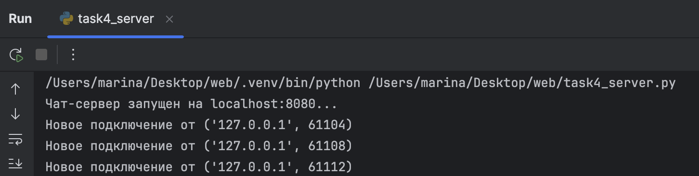
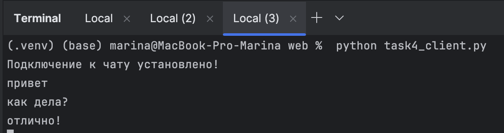
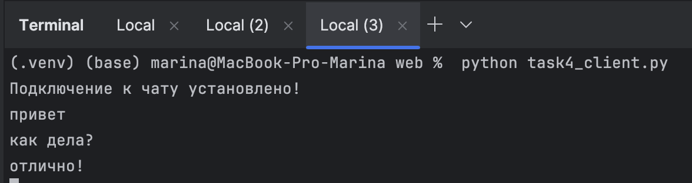

Задание 4
Условие
Реализовать двухпользовательский или многопользовательский чат.
Для максимального количества баллов рекомендуется реализовать многопользовательский чат.
Требования:
- Обязательно использовать библиотеку socket.
- Для многопользовательского чата использовать библиотеку threading.
- Сервер должен обрабатывать подключения всех пользователей и пересылать сообщения между ними.
Пояснения
- TCP (Transmission Control Protocol) — обеспечивает надёжную передачу сообщений между клиентом и сервером.
- Сокет (socket) — точка подключения к сети, через которую происходит обмен сообщениями.
- Threading — позволяет серверу одновременно обслуживать несколько клиентов.
Реализация
Сервер
import socket
import threading
# Настройки сервера
HOST = 'localhost'
PORT = 8080
# Создаем TCP-сокет
server_socket = socket.socket(socket.AF_INET, socket.SOCK_STREAM)
server_socket.bind((HOST, PORT))
server_socket.listen(5)
print(f"Чат-сервер запущен на {HOST}:{PORT}...")
# Список для хранения всех подключенных клиентов
clients = []
def handle_client(client):
"""Обрабатывает сообщения от конкретного клиента"""
while True:
try:
# Получаем сообщение от клиента
message = client.recv(1024).decode('utf-8')
if message:
# Рассылаем сообщение всем клиентам
for client_item in clients:
if client_item != client: # Не отправляем отправителю
client_item.send(message.encode('utf-8'))
else:
# Пустое сообщение = отключение
break
except:
# Ошибка при получении = отключение
break
# Удаляем клиента при отключении
if client in clients:
clients.remove(client)
client.close()
# Принимаем новые подключения
while True:
# Принимаем новое подключение
client_connection, client_address = server_socket.accept()
print(f"Новое подключение от {client_address}")
# Добавляем клиента в список
clients.append(client_connection)
# Создаем поток для общения с этим клиентом
client_thread = threading.Thread(target=handle_client, args=(client_connection,))
client_thread.daemon = True # Делаем поток фоновым (завершится вместе с сервером)
client_thread.start() # Запускаем поток
Пояснение:
- Сервер создаёт TCP-сокет и слушает заданный порт (
8080). - При подключении нового клиента сервер добавляет его в список
clients. - Для каждого клиента создаётся отдельный поток (
threading.Thread), который обрабатывает сообщения этого клиента. - Когда клиент отправляет сообщение, сервер пересылает его всем остальным клиентам, кроме отправителя.
- Если клиент отключается или возникает ошибка, поток закрывается, а клиент удаляется из списка.
Клиент
import socket
import threading
# Настройки сервера
HOST = 'localhost'
PORT = 8080
# Создаем TCP-сокет и подключаемся к серверу
client_socket = socket.socket(socket.AF_INET, socket.SOCK_STREAM)
client_socket.connect((HOST, PORT))
print("Подключение к чату установлено!")
def receive_messages():
"""Получает сообщения от сервера в отдельном потоке"""
while True:
try:
# Получаем сообщение от сервера
message = client_socket.recv(1024).decode('utf-8')
print(message)
except:
# Ошибка при получении = разрыв соединения
print("Соединение разорвано!")
break
# Поток для получения сообщений от сервера
receive_thread = threading.Thread(target=receive_messages)
receive_thread.daemon = True # Фоновый режим (завершится с программой)
receive_thread.start() # Запускаем прием сообщений
# Отправляем сообщения на сервер
while True:
message = input()
if message.lower() == 'выход':
break
# Отправляем сообщение на сервер
try:
client_socket.send(message.encode('utf-8'))
except:
print("Не удалось отправить сообщение!")
break
client_socket.close()
Пояснение:
- Запускаем несколько клиентов из разных терминалов, написав
python task4_client.py - Клиент создаёт TCP-сокет и подключается к серверу.
- Создаётся отдельный поток для приёма сообщений от сервера, чтобы пользователь мог одновременно отправлять сообщения и получать их от других участников.
- Пользователь вводит сообщения с клавиатуры. Все сообщения отправляются на сервер.
- Команда
выходзавершает работу клиента и закрывает соединение.
Скрины выполнения
Вывод на стороне сервера

Вывод на стороне клиентов

 
